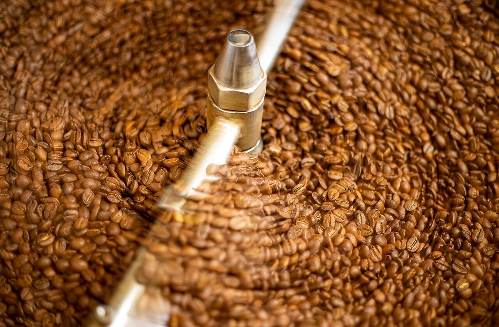
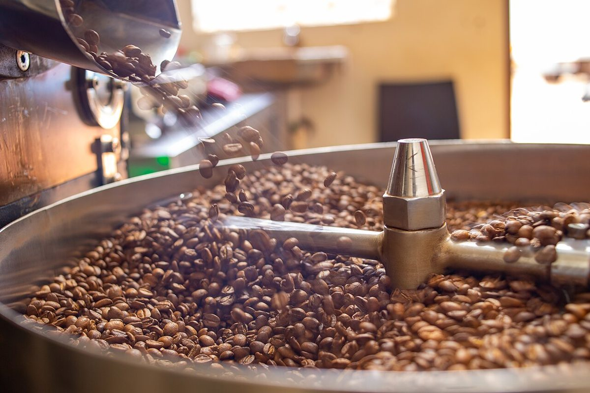
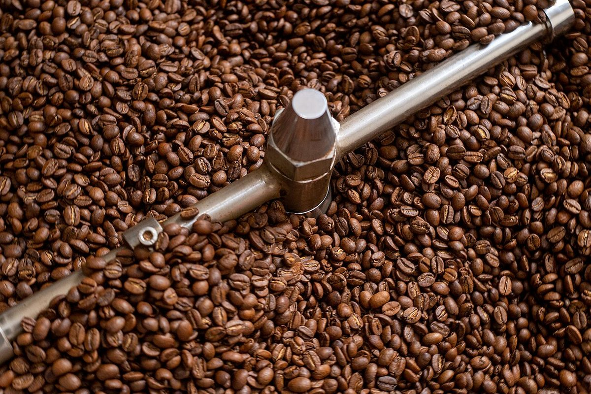

制作側の連想
屋号の「焙煎所」から、銀皮を思った。
店名の由来やお店の考えは分かりません。制作側は「焙煎所」という言葉から、焙煎のときに生豆の表面からはがれて舞う、薄い銀色の皮「銀皮(ぎんぴ)」を連想しました。そこでこのサイトは、銀皮のようにひとひらずつ、ゆるく反った形で写真と文章を並べています。制作側の連想で、お店の理念・由来とは無関係です。
ひとひらの行程(イメージ)
豆が一杯になるまで、四つのひとひら。
一般的な珈琲豆の流れをイメージで並べたものです。お店の工程や提供内容を示すものではなく、写真も国外・撮影地不明のフリー素材です。
- ひとひら 一生豆

撮影地不明のイメージ - ひとひら 二煎る

国外のイメージ(ウガンダ) - ひとひら 三冷ます

国外のイメージ(ウガンダ) - ひとひら 四一杯

国外のイメージ(バングラデシュ)
ご案内
お店のこと(確認できたものだけ)
| 所在地 | 〒795-0012 愛媛県大洲市大洲227 |
|---|---|
| 電話 | なし |
| 営業時間 | 準備中 |
| 定休日 | 準備中 |
| ご予約 | 準備中 |
| 駐車場 | 準備中 |
| SNS | Instagram @machinaka.coffee |